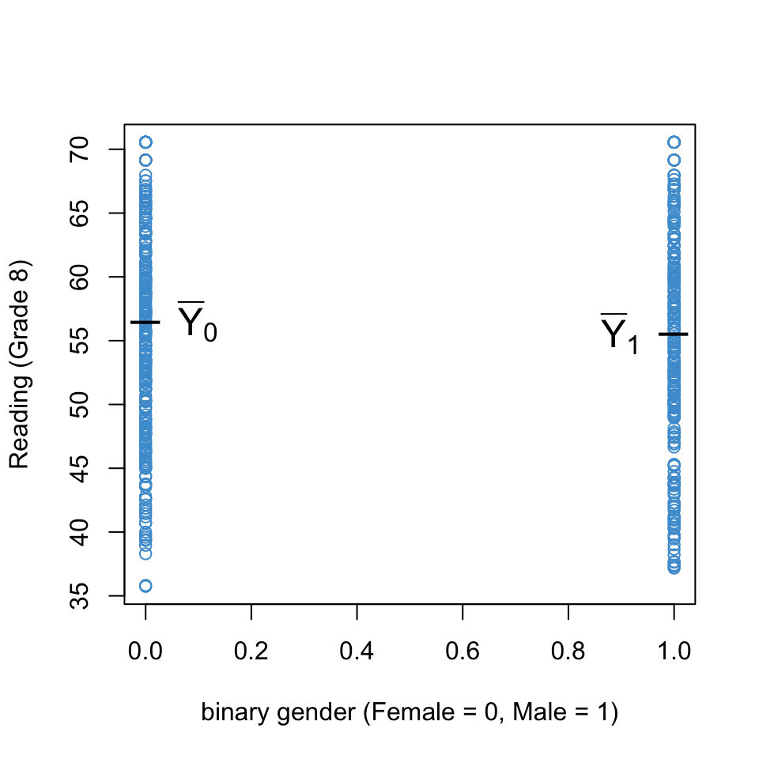

So far we have considered examples in which we regress a continuous outcome variable (e.g., Math Achievement) on one or more continuous predictors (SES, Approaches to Learning). In this chapter we consider how regression can be used with categorical predictors.
In an experimental context, the canonical example of a categorical predictor is treatment status (e.g., 1 = treatment group, 0 = control group). Examples of other categorical predictors commonly used in education research include:
Geographical region / school district (Orange, CH-C, Wake, …)
Type of school (public, private, charter, religious)
Which classroom, teacher, or school a student was assigned to
Gender (if recorded as categorical)
Race / ethnicity (if recorded as categorical)
Free / reduced price lunch status
English language learner status
Individualized learning plan status
…
In regression, we deal with these types of predictors using an approach called contrast coding (also called effect coding or dummy coding). In particular, we will address three types of contrast coding:
The special case of a single binary predictor
Reference-group coding (called “treatment” contrasts in R)
Deviation coding (called “sum” contrasts in R)
There are other types of contrast coding out there. We do not attempt an exhaustive review. However, the techniques we use in this chapter can be used with other types of contrast coding.
Along the way we will see that regression with a categorical predictor encompasses the independent samples t-tests of means and one-way ANOVA, both of which we discussed last semester. In the next chapter we will address how to combine categorical and continuous predictors in the same model.
4.1 Focus on interpretation
Categorical predictors can be challenging to understand because, depending on the contrast coding used, the model results can appear quite different.
For example, the two models below use the same data and the same variables (Math Achievement regressed on Urbanicity), but their regression coefficients have different values. Why? Because the models used different contrast coding for Urbanicity. In the first model, Urban and Suburban students are compared to Rural students. In the second model, Rural and Suburban students are compared to the unweighted average across all three groups. We talk in more detail about these interpretations in the following sections. For now, the main thing to notice is just that “different contrast coding = different results”.
Code
load("NELS.RData")attach(NELS)# run model with default contrast (treatment / dummy coding)egA <-lm(achrdg08 ~ urban)# change to sum / deviation contrasts and run againcontrasts(urban) <-contr.sum(n =3)colnames(contrasts(urban)) <-c("Rural", "Suburban")egB <-lm(achrdg08 ~ urban)# printsummary(egA)
Call:
lm(formula = achrdg08 ~ urban)
Residuals:
Min 1Q Median 3Q Max
-22.3002 -6.1620 0.2098 6.7948 15.5573
Coefficients:
Estimate Std. Error t value Pr(>|t|)
(Intercept) 54.9927 0.6885 79.876 < 2e-16 ***
urbanSuburban 0.6675 0.9117 0.732 0.46439
urbanUrban 3.1275 1.0480 2.984 0.00298 **
---
Signif. codes: 0 '***' 0.001 '**' 0.01 '*' 0.05 '.' 0.1 ' ' 1
Residual standard error: 8.763 on 497 degrees of freedom
Multiple R-squared: 0.01904, Adjusted R-squared: 0.0151
F-statistic: 4.824 on 2 and 497 DF, p-value: 0.008411
Code
summary(egB)
Call:
lm(formula = achrdg08 ~ urban)
Residuals:
Min 1Q Median 3Q Max
-22.3002 -6.1620 0.2098 6.7948 15.5573
Coefficients:
Estimate Std. Error t value Pr(>|t|)
(Intercept) 56.2577 0.4021 139.897 <2e-16 ***
urbanRural -1.2650 0.5654 -2.237 0.0257 *
urbanSuburban -0.5975 0.5299 -1.128 0.2600
---
Signif. codes: 0 '***' 0.001 '**' 0.01 '*' 0.05 '.' 0.1 ' ' 1
Residual standard error: 8.763 on 497 degrees of freedom
Multiple R-squared: 0.01904, Adjusted R-squared: 0.0151
F-statistic: 4.824 on 2 and 497 DF, p-value: 0.008411
Note that the lm output doesn’t explicitly tell us what kind of coding was used. So, we need to know what is going on “under the hood” in order to interpret the output correctly. Also note that the while the Coefficients tables of the two models are different, they both explain the same amount of variance in the outcome. So, we could say that both models “fit” the data equally well, but they provide different interpretations of the relationship between Math Achievement and Urbanicity.
The choice of which contrast to use is up to the researcher. This choice should reflect the research questions you want to address. For example, if we wanted to know how Urban and Suburban students differ from Rural students, that is what the first output shows us. If we wanted to know how Suburban and Rural students differ from the overall average, that is what the second output shows us. As we will discuss below, we can’t make all possible comparisons among groups in a single model, so we have to make some compromises when choosing contrasts. Understanding how to align our research questions with the choice of contrasts is a big part of what this chapter is about!
4.2 Data and social constructs
Before getting into the math, let’s consider some conceptual points.
First, some terminology. Binary means the a variable can take on only two values: 1 and 0. If a variable takes on two values but these are represented with other numbers (e.g., 1 and 2) or with non-numeric values (“male”, “female”), it is called dichotomous rather than binary. Otherwise stated, a binary variable is a dichotomous variable whose values are 1 and 0. The term categorical is used to describe variables with two or more categories – it includes binary and dichotomous variables, as well as variables with more categories.
Note that encoding a variable as dichotomous does not imply that the underlying social construct is dichotomous. For example, we can encode educational attainment as a dichotomous variable indicating whether or not a person has graduated high school. This does not imply that educational attainment has only two values “irl”, or even that educational attainment is best conceptualized in terms of years of formal education. Nonetheless, for many outcomes of interest it can be meaningful to consider whether individuals have completed high school (e.g., https://www.ssa.gov/policy/docs/research-summaries/education-earnings.html).
In general, the way that a variable is encoded in a dataset is not a statement about reality – it reflects a choice made by researchers about how to represent social constructs. When conducting quantitative research, we are often faced with less-than-ideal encodings of social constructs, especially demographic variables. For example, both NELS and ECLS conceptualize gender as dichotomous and use a limited set of mutually exclusive categories for race. These representations are not well aligned with current literature on gender and racial identity. Some recent perspectives on how these issues play into quantitative research are available here: https://www.sree.org/critical-perspectives.
Despite the conceptual issues inherent in categorizing social constructs, I would argue that categorical variables often have utility, especially in the study of social inequality. Here is an example of why I think gender qua “male/female” is a flawed but important consideration in global education: https://www.unicef.org/education/girls-education.
Please take a moment to write down your thoughts on the tensions that arise when conceptualizing social constructs such as gender or race as categorical, and I will invite you to share you thoughts in class.
4.3 Binary predictors
Let’s start our interpretation of categorical predictors with the simplest case: a single binary predictor.
Figure 4.1 uses the NELS data to illustrate the regression of Reading Achievement in Grade 8 (achrdg08) on a binary encoding of Gender (female = 0, male = 1). There isn’t a lot going on the plot! However, we can see the conditional distributions of Reading Achievement for each value of Gender, and the means of the two groups are indicated.
Code
# Don't read this unless you really like working on graphics :) binary_gender <- (gender =="Male") *1plot(binary_gender, achrdg08, col ="#4B9CD3", xlab ="binary gender (Female = 0, Male = 1)",ylab ="Reading (Grade 8)")means <-tapply(achrdg08, binary_gender, mean)labels <-c(expression(bar(Y)[0]), expression(bar(Y)[1]))text(x =c(.1, .9), y = means, labels = labels, cex =1.5) text(x =c(0, 1), y = means, labels =c("_", "_"), cex =2)

Figure 4.1: Reading Achievement on Binary Gender.
We can represent the relationship between Reading Achievement and Gender using the same simple regression equation from Section 2.2
\[\widehat Y = b_0 + b_1 X, \]
and we can still interpret the regression slope in terms of a one-unit increase in \(X\). However, since \(X\) can only take on two values (0 or 1), there are also other interpretations of the regression coefficients. In this section we are interested in the these “more specific” interpretations of regression coefficients when \(X\) is binary.
The general strategy for approaching the interpretation of regression coefficients with categorical predictors has two steps:
Step 1. Plug the values for \(X\) into the regression equation to get the predicted values for each group \[
\begin{align}
\widehat Y (Female) & = b_0 + b_1 (0) = b_0 \\
\widehat Y (Male) & = b_0 + b_1 (1) = b_0 + b_1
\end{align}
\]
Step 2. Solve for the coefficients in terms the predicted values.
\[ b_0 = \widehat Y (Female) \tag{4.1}\]\[ b_1 = \widehat Y (Male) - b_0 = \widehat Y (Male) - \widehat Y (Female)
\tag{4.2}\]
Looking at Equation 4.1 we can see that intercept (\(b_0\)) is equal to the predicted value of Reading Achievement for Females, and Equation 4.2 shows that the regression slope (\(b_1\)) is equal to the difference between predicted Reading Achievement for Males and Females.
There is one last detail that is important for interpreting these equations: for a single categorical predictor, the predicted values for each category are just the group means on the \(Y\) variable (see Section 4.7, which is optional).
We will use the equivalence between the predicted values and group means on the outcome variable throughout this chapter. However, it is important to note this equivalence holds only when there is single categorical predictor in the model, and no other predictors. Additional predictors are discussed in the next chapter.
For the example data, regression coefficients are:
Please take a moment and write down how these two numbers are related to Figure 4.1. In particular, what is \(\bar Y_0\) equal to, what is \(\bar Y_1\) equal to, and what is their difference equal to?
4.3.1 Relation with t-tests of means
Simple regression with a binary predictor is equivalent to conducting an independent samples t-test in which the \(X\) variable (Gender) is the grouping variable and the \(Y\) variable (Reading Achievement) is the outcome. The following output illustrates this.
For the regression model (same as above):
Code
summary(mod_binary)
Call:
lm(formula = achrdg08 ~ binary_gender)
Residuals:
Min 1Q Median 3Q Max
-20.7278 -6.1472 0.3784 6.9765 15.0045
Coefficients:
Estimate Std. Error t value Pr(>|t|)
(Intercept) 56.4678 0.5342 105.703 <2e-16 ***
binary_gender -0.9223 0.7928 -1.163 0.245
---
Signif. codes: 0 '***' 0.001 '**' 0.01 '*' 0.05 '.' 0.1 ' ' 1
Residual standard error: 8.827 on 498 degrees of freedom
Multiple R-squared: 0.00271, Adjusted R-squared: 0.0007076
F-statistic: 1.353 on 1 and 498 DF, p-value: 0.2452
For the independent samples t-test (with homogeneity of variance assumed):
Code
t.test(achrdg08 ~ binary_gender, var.equal = T)
Two Sample t-test
data: achrdg08 by binary_gender
t = 1.1633, df = 498, p-value = 0.2452
alternative hypothesis: true difference in means between group 0 and group 1 is not equal to 0
95 percent confidence interval:
-0.6353793 2.4800586
sample estimates:
mean in group 0 mean in group 1
56.46780 55.54546
We will go through the comparison between these two outputs in class together. If you have any questions about the relation between these two sets of output, please note them now and be prepared ask them in class.
4.3.2 Summary
When doing regression with a binary predictor:
The regression intercept is equal to the mean of the group coded “0”.
The regression slope is equal to the mean of the group coded “0” subtracted from the mean of the groups coded “1”.
Testing \(H_0: b_1 = 0\) is equivalent to testing the mean difference \(H_0: \mu_1 – \mu_0 = 0\)
i.e., regression with a binary variable is the same as a t-test of means for independent groups.
4.4 Reference-group coding
Now that we know about regression with a binary predictor, let’s consider how to extend this approach to contrast coding of categorical predictors with \(C ≥ 2\) categories.
The basic idea is to represent the \(C\) categories of the predictor in terms of \(C – 1\) “dummy variables.” Binary coding of a dichotomous predictor is one example of this: We represented a categorical variable with \(C = 2\) categories using \(1\) binary predictor.
For predictors with \(C ≥ 2\) categories, the most common approach to contrast coding is called reference-group coding. In R, the approach is called treatment contrasts and is the default coding for categorical predictors.
It is called reference-group coding because:
The researcher chooses a reference-group.
The intercept is interpreted as the mean of the reference-group.
The \(C – 1\) regression slopes are interpreted as the mean differences between the \(C – 1\) other groups and the reference-group.
Note that reference-group coding is a generalization of binary coding. In the example from Section Section 4.3:
Females were the reference-group.
The intercept was equal to the mean Reading Achievement for females.
The regression coefficient was equal to the mean difference between males and females.
The rest of this section considers how to generalize this approach to greater than 2 groups.
4.4.1 A hypothetical example
Figure 4.2 presents a toy example. The data show the Age and marital status (Mstatus) of 16 hypothetical individuals. Marital status is encoded as
These 3 categories are represented by two binary variables, denoted \(X_1\) and \(X_2\).
\(X_1\) is a binary variable that is equal to 1 when Mstatus is “married”, and equal to 0 otherwise.
\(X_2\) is a binary variable that is equal to 1 when Mstatus is “divorced”, and equal to 0 otherwise.
The binary variables are often called dummies or indicators. For example, \(X_1\) is a dummy or indicator for married respondents.
In reference-group coding, the group that does not have a dummy variable is the reference group. It is also the group that is coded zero on all of the included dummies. In this example, “Single” is the reference group.
We can more compactly write down the contrast coding in the example using a contrast matrix .
This notation is an abbreviated version of the data matrix in Figure 4.2. It summarizes how the two indicator variables correspond to the different levels of the categorical variable. As we will see in the Section 4.9, contrast matrices are useful for programming in R.
4.4.2 Interpreting the regression coefficients
Regressing Age on the dummies we have:
\[ \widehat Y = b_0 + b_1 X_1 + b_2 X_2. \]
In order to interpret the regression coefficients we can use the same two steps as in Section 4.3
Step 1. Plug the values for the \(X\) variables into the regression equation to get the predicted values for each group
Step 2. Solve for the model parameters in terms the predicted values.
\[\begin{align}
b_0 & = \widehat Y (Single) \\
b_1 & = \widehat Y (Married) - b_0 = \widehat Y (Married) - \widehat Y (Single) \\
b_2 & = \widehat Y (Divorced) - b_0 = \widehat Y (Divorced) - \widehat Y (Single)
\end{align}\]
Using the above equations, please write down an interpretation of the regression parameters for the hypothetical example. (Note: this question is not asking for a numerical answer, it is just asking you to put the above equations into words.)
4.4.3 More than 3 categories
Figure 4.3 extends the example by adding another category for Mstatus (“widowed”).
Please work through the following questions and be prepared to share your answers in class
How should \(X_3\) be coded so that “single” is the reference-group?
Write down the contrast matrix for the example.
Using the two-step approach illustrated above, write out the interpretation of the regression coefficients.
Let’s imagine that we included an additional dummy variable for “Single” in the model. In this case we would have \(C = 4\) dummies in the model rather than \(C-1 = 3\) dummies. Please take a moment to write down what you think will happen (Hint: something goes wrong)
4.4.4 Summary
In reference-group coding with a single categorical variable:
The reference is group is chosen by the analyst – it is the group that is coded zero on all dummies, or the one that has its indicator omitted from the model.
The intercept is interpreted as the mean of the reference group.
The regression coefficients of the dummy variables are interpreted as the difference between the mean of the indicated group and the mean of the reference group.
4.5 Deviation coding
In some research scenarios, there is a clear reference group. For example, in an experiment, all treatment groups are can be compared to the control group. But in other cases, it is less clear what the reference group should be. In both of the examples we have considered so far (gender and marital status), the choice of reference group was arbitrary.
When there is not a clear reference group, it can be preferable to use other types of contrast coding than reference-group coding. One such approach is called deviation coding. In R, this is called sum-to-zero constrasts, or sum contrasts for short.
The main difference between deviation coding and reference-group coding is the interpretation of the intercept. In deviation coding, it is no longer the mean of the reference-group, but instead represents the mean of all groups’ predicted values. When the groups have equal sample size, the deviation-coded intercept is also equal to overall mean on \(Y\).
More specifically, in deviation coding:
The intercept is equal to the mean of the predicted values for each category i.e.,
The regression slopes compare the each group to the intercept. Consequently, when the groups have equal sample sizes, the regression slopes are interpreted as the deviation of each group mean from the overall mean, which is why it is called deviation coding.
When the groups have unequal sample size, the situation is a bit more complicated. In particular, we have to weight the predicted values in Equation 4.5 by the group sample sizes. This is addressed in Section 4.5.4 (optional). To clarify that intercept in deviation coding is not always equal to \(\bar Y\), we refer to it as an “unweighted mean” of group means / predicted scores.
It is important to note that there are still only \(C-1\) regression slopes So, one group gets left out of the analysis, and the researcher has to chose which one. This is a shortcoming of deviation coding, which is addressed in Section 4.5.5 (optional).
4.5.1 A hypothetical example
The International Development and Early Learning Assessment (IDELA) is an assessment designed to measure young children’s development in literacy, numeracy, social-emotional, and motor domains, in international settings. Figure 4.4 shows the countries in which the IDELA had been used as of 2017 (for more info, see https://www.savethechildren.net/sites/default/files/libraries/GS_0.pdf).
If our goal was to compare countries’ IDELA scores, agreeing on which country should serve as the reference group would politically fraught. Therefore, it would be preferable to avoid the problem of choosing a reference group altogether. In particular, deviation coding let’s us compare each country’s mean IDELA score to the (unweighted) mean over all of the countries.
Figure 4.5 presents a toy example. The data show the IDELA scores and Country for 16 hypothetical individuals. The countries considered in this example are
Ethiopia
Vietnam
Boliva
These 3 countries are represented by two binary variables, denoted \(X_1\) and \(X_2\).
Note that the dummy variables are different than for the case of reference-group coding discussed in Section 4.4. In deviation coding, the dummies always take on values \(1, 0, -1\). The same group must receive the code \(-1\) for all dummies. The group with the value \(-1\) is the group that gets left out of the analysis.
Please take a moment to write down the contrast matrix for the IDELA example.
4.5.2 Interpreting the regression coefficients
Regressing IDELA on the dummies we have:
\[\widehat Y = b_0 + b_1 X_1 + b_2 X_2\]
In order to interpret the regression coefficients, we proceed using the same two steps as in Section 4.3 and Section 4.4.
Step 1. Plug the values for \(X\) into the regression equation to get the predicted values for each group.
Step 2. Solve for the model parameters in terms of the predicted values.
\[\begin{align}
b_1 &= \widehat Y (Ethiopia) - b_0 \\
b_2 &= \widehat Y (Vietnam) - b_0 \\
b_0 & = \widehat Y (Bolivia) + b_1 + b_2 \\
\end{align}\]
At this point, we want to use the first two lines to substitute in for \(b_1\) and \(b_2\) in the last line:
\[\begin{align}
b_0 & = \widehat Y (Bolivia) + \widehat Y (Ethiopia) - b_0 + \widehat Y (Vietnam) - b_0 \\
\implies & \\
3b_0 & = \widehat Y (Bolivia) + \widehat Y (Ethiopia) + \widehat Y (Vietnam) \\
\implies & \\
b_0 & = \frac{\widehat Y (Bolivia) + \widehat Y (Ethiopia) + \widehat Y (Vietnam)}{3}
\end{align}\]
In the last line we see that \(b_0\) is equal to the (unweighted) mean of the predicted values.
Using the above equations, please write down an interpretation of the regression parameters for the hypothetical example. (Note: this question is not asking for a numerical answer, it is just asking you to put the above equations into words.)
4.5.3 Summary
In deviation coding with a single categorical variable:
The intercept is interpreted as the unweighted mean of the groups’ means, which is equal to the overall mean on the \(Y\) variable when the groups have equal sample sizes.
The regression slopes on the dummy variables are interpreted as the difference between the mean of the indicated group and the unweighted mean of the groups.
There are still only \(C - 1\) regression coefficients, so one group gets left out (see extra material for how to get around this).
4.5.4 Extra: Deviation coding with unequal sample sizes*
When groups have unequal sample size, the unweighted mean of the group means is not equial the overall mean of the \(Y\) variable. This is not always a problem. In particular, in the IDELA example, it is reasonable that each country should receive equal weight, even if the size of the samples in each country differed.
However, if you want to compare each groups’ mean to the overall mean on \(Y\), deviation coding can be adjusted by replacing the dummy-coded value \(-1\) with the ratio of indicated group’s sample size to the omitted group’s sample size. An example for 3 groups is shown below.
Replacing \(\widehat Y( \text{Group }c )\) with \(\bar Y_c\) you can also show that \(b_0 = \bar Y\), using the rules of summation algebra.
The punchline: unlike the case for the deviation coding, the intercept in weighted deviation coding is always equal to the overall mean on the outcome variance, regardless of the sample sizes of the groups. In R, you can use the package wec for weighted effect coding.
4.5.5 Extra: Deviation coding with all groups included*
Another shortcoming of deviation coding is that it requires leaving one group out of the model. As a work around, one can instead use the following approach. Note that this approach will affect the statistical significance of R-squared, so you should only use it if you aren’t interested in reporting R-squared (or are willing to do some more fiddling around with R).
Step 1: Center the \(Y\) variable so that \(\bar Y = 0\).
Step 2: Compute binary dummy variables (reference-group coding) for all \(C\) groups, \(X_1, X_2, \dots, X_C\)
Step 3: Regress \(Y\) on the all \(C\) dummy variables, without the intercept in the model:
\[\hat Y = b_1X_1 + b_2 X_2 + \dots + b_cX_C.\]
Using the two step approach, it is easy to show that the regression coefficients are just the means of the indicated group. Since the overall mean of \(Y\) is zero (because of Step 1), the group means can be interpreted as deviations from the overall mean on \(Y\).
Using the lm function in R, you can remove the intercept from the model using -1 in the formula syntax:
Y ~ -1 + X1 + ...
As noted, this will affect the statistical significance of R-squared, as reported in summary(lm). So, you shouldn’t use this approach when you want to report R-squared. The next two paragraphs explain why, but the explanation requires some material we won’t discuss until ?sec-chap-6.
The F-test of R-squared can be computed by comparing two different models, a reference model with no predictors and a focal model with the predictors. The reference model used by lm depends on whether the intercept is included in the focal model. If the focal model has an intercept, the reference model also has an intercept. In the focal model omits the intercept, the reference also omits the intercept.
In the present context, the focal model omits the intercept and use \(C\) dummies This model has the same R-squared as if we had used the intercept and \(C-1\) dummies. However, the F-statistic for the test of R-squared (as reported by summary(lm)) is different for the two approaches, because of the choice of reference model. You can change the reference model, but it takes a bit of fiddling around. If you are interested, just ask in class.
4.6 Relation with ANOVA
As mentioned in Chapter 3, the F-test of R-squared is equivalent to simultaneously testing whether all of the regression slopes are equal to zero. In symbols:
Testing
\[H_0: R^2 = 0\]
is equivalent to testing
\[H_0: b_1 = b_2 = \cdots = b_{C-1} = 0\] We have see above that the regression slopes can be interpreted in terms of group-mean differences. For example, under reference-group coding, we can re-write the null hypothesis above as:
\[H_0: \bar Y_1 - \bar Y_C = \bar Y_2 - \bar Y_C = \cdots = \bar Y_{C-1} - \bar Y_C = 0\] In this notation, we let \(C\) denote the reference group. If we add \(\bar Y_C\) to each equality in the null hypothesis, we have
\[H_0: \bar Y_1 = \bar Y_2 = \cdots = \bar Y_{C-1} = \bar Y_C \] Note that this is the same null hypothesis as one-way ANOVA – i.e., all the group means are equal. Consequently, the F-test of R-squared using a categorical predictor is equivalent to the F-test of the omnibus hypothesis in one-way ANOVA (assuming homoskedasticity). In Section 4.9, we show how the two approaches produce the same numerical values.
Although regression with a categorical predictor is mathematically equivalent to one-way ANOVA, you may have noticed that the two approahces are not used in the same way. In ANOVA, we first conduct an F-test of the omnibus hypothesis, and, if the test is significant, we follow-up by comparing the groups using procedures that control for familywise error rate. In regression, we just report the F-test along with the test of the individual contrasts, without any discussion of familywise error rate control. Which approach is correct? Depends who you ask….
4.7 Some details about categorical data*
Check back later for:
mean and variance of binary variables
covariance between binary variables and between binary and continuous
regression coefficient when X is binary
4.8 Workbook
This section collects the questions asked in this chapter. The lesson for this chapter will focus on discussing these questions and then working on the exercises in Section 4.9. The lesson will not be a lecture that reviews all of the material in the chapter! So, if you haven’t written down / thought about the answers to these questions before class, the lesson will not be very useful for you. Please engage with each question by writing down one or more answers, asking clarifying questions about related material, posing follow up questions, etc.
Please take a moment to write down your thoughts on the tensions that arise when conceptualizing social constructs such as gender or race as categorical, and I will invite you to share you thoughts in class.
Please take a moment to write down how the regression output is related to the Figure. In particular, what is \(\bar Y_0\) equal to, what is equal \(\bar Y_0\) to, and what is their difference equal to?
Code
# Don't read this unless you really like working on graphics :) binary_gender <- (gender =="Male") *1plot(binary_gender, achrdg08, col ="#4B9CD3", xlab ="binary gender (Female = 0, Male = 1)",ylab ="Reading (Grade 8)")means <-tapply(achrdg08, binary_gender, mean)labels <-c(expression(bar(Y)[0]), expression(bar(Y)[1]))text(x =c(.1, .9), y = means, labels = labels, cex =1.5) text(x =c(0, 1), y = means, labels =c("_", "_"), cex =2)
We will go through the comparison between these two outputs in class together. If you have any questions about the relation between these two sets of output, please note them now and be prepared ask them in class.
Regression with a binary predictor:
Code
summary(mod_binary)
Call:
lm(formula = achrdg08 ~ binary_gender)
Residuals:
Min 1Q Median 3Q Max
-20.7278 -6.1472 0.3784 6.9765 15.0045
Coefficients:
Estimate Std. Error t value Pr(>|t|)
(Intercept) 56.4678 0.5342 105.703 <2e-16 ***
binary_gender -0.9223 0.7928 -1.163 0.245
---
Signif. codes: 0 '***' 0.001 '**' 0.01 '*' 0.05 '.' 0.1 ' ' 1
Residual standard error: 8.827 on 498 degrees of freedom
Multiple R-squared: 0.00271, Adjusted R-squared: 0.0007076
F-statistic: 1.353 on 1 and 498 DF, p-value: 0.2452
Independent samples t-test (with homogeneity of variance assumed):
Code
t.test(achrdg08 ~ binary_gender, var.equal = T)
Two Sample t-test
data: achrdg08 by binary_gender
t = 1.1633, df = 498, p-value = 0.2452
alternative hypothesis: true difference in means between group 0 and group 1 is not equal to 0
95 percent confidence interval:
-0.6353793 2.4800586
sample estimates:
mean in group 0 mean in group 1
56.46780 55.54546
Step 2. Solve for the model parameters in terms the predicted values.
\[\begin{align}
b_0 & = \widehat Y (Single) \\
b_1 & = \widehat Y (Married) - b_0 = \widehat Y (Married) - \widehat Y (Single) \\
b_2 & = \widehat Y (Divorced) - b_0 = \widehat Y (Divorced) - \widehat Y (Single)
\end{align}\]
Using the above equations, please write down an interpretation of the regression parameters for the hypothetical example. (Note: this question is not asking for a numerical answer, it is just asking you to put the above equations into words.)
Please work through the following questions and be prepared to share your answers in class
How should \(X_3\) be coded so that “single” is the reference-group?
Write down the contrast matrix for the example.
Using the two-step approach illustrated above, write out the interpretation of the regression coefficients.
Let’s imagine that we included an additional dummy variable for “Single” in the model. In this case we would have \(C = 4\) dummies in the model rather than \(C-1 = 3\) dummies. Please take a moment to write down what you think will happen (Hint: something goes wrong).
Step 2. Solve for the model parameters in terms of the predicted values.
\[\begin{align}
b_1 &= \widehat Y (Ethiopia) - b_0 \\
b_2 &= \widehat Y (Vietnam) - b_0 \\
b_0 & = \widehat Y (Bolivia) + b_1 + b_2 \\
\end{align}\]
At this point, we want to use the first two lines to substitute in for \(b_1\) and \(b_2\) in the last line, which leads to
\[\begin{align}
b_0 & = \frac{\widehat Y (Bolivia) + \widehat Y (Ethiopia) + \widehat Y (Vietnam)}{3}
\end{align}\]
In the last line we see that \(b_0\) is equal to the (unweighted) mean of the predicted values.
Using the above equations, please write down an interpretation of the regression parameters for the hypothetical example. (Note: this question is not asking for a numerical answer, it is just asking you to put the above equations into words.)
4.9 Exercises
These exercises provide an overview of contrast coding with categorical predictors in R. Two preliminary topics are also discussed: linear regression with a binary predictor, and the factor data class in R. We will go through this material in class together, so you don’t need to work on it before class (but you can if you want.)
Before staring this section, you may find it useful to scroll to the top of the page, click on the “</> Code” menu, and select “Show All Code.”
4.9.1 A single binary predictor
Regression with a single binary predictor is equivalent to the independent samples t-test of group means. Let’s illustrate this using the NELS dataset with Reading achievement in grade 8 (achrdg08) as the outcome and gender as the predictor. Although gender need not be conceptualized as dichotomous or even categorical, the variable gender reported in NELS data is dichotomous, with values “Female” and “Male”.
R treats variables like gender as “factors”. Factors have special properties that we are going to work with later on, but for now let’s recode gender to binary_gender by setting Female = 0 and Male = 1
4.9.2 Recoding a factor to numeric
Code
# load("NELS.RData")# attach(NELS)# Note that gender is non-numeric -- it is a factor with levels "Female" and "Male"head(gender)
[1] Male Female Male Female Male Female
Levels: Female Male
Code
class(gender)
[1] "factor"
Code
# A trick to create a binary indicator for males binary_gender <- (gender =="Male") *1# Check that the two variables are telling us the same thingtable(gender, binary_gender)
binary_gender
gender 0 1
Female 273 0
Male 0 227
It is often hassle to get from factor to numeric or vice versa. Above we used a hack by of first creating a logical vector (gender == "Male") and then coercing the logical vector to binary by multiplying it by 1. Other strategies can be used. See help(factor) for more information.
4.9.3 Binary predictors and independent samples t-tests
Now let’s get back to regressing Reading Achievement (achrdg08) on binary_gender, and comparing this to an independent samples t-test using the same two variables.
Code
# Regression with a binary variablemod1 <-lm(achrdg08 ~ binary_gender)summary(mod1)
Call:
lm(formula = achrdg08 ~ binary_gender)
Residuals:
Min 1Q Median 3Q Max
-20.7278 -6.1472 0.3784 6.9765 15.0045
Coefficients:
Estimate Std. Error t value Pr(>|t|)
(Intercept) 56.4678 0.5342 105.703 <2e-16 ***
binary_gender -0.9223 0.7928 -1.163 0.245
---
Signif. codes: 0 '***' 0.001 '**' 0.01 '*' 0.05 '.' 0.1 ' ' 1
Residual standard error: 8.827 on 498 degrees of freedom
Multiple R-squared: 0.00271, Adjusted R-squared: 0.0007076
F-statistic: 1.353 on 1 and 498 DF, p-value: 0.2452
Code
# Compare to the output of t-testt.test(achrdg08 ~ binary_gender, var.equal = T)
Two Sample t-test
data: achrdg08 by binary_gender
t = 1.1633, df = 498, p-value = 0.2452
alternative hypothesis: true difference in means between group 0 and group 1 is not equal to 0
95 percent confidence interval:
-0.6353793 2.4800586
sample estimates:
mean in group 0 mean in group 1
56.46780 55.54546
Note that:
The intercept in mod1 is equal the mean of the group coded 0 (females) in the t-test:
\[b_0 = \bar Y_0 = 56.4678\]
The b-weight in mod1 is equal to difference between the means:
The t-test of the b-weight, and its p-value, are equivalent to the t-test mean difference (except for the sign):
\[ t(498) = 1.1633, p = .245\]
In summary, a t-test of a b-weight of a binary predictor is equal equivalent to a t-test of the mean difference.
4.9.4 Reference-group coding
As discussed in Section @ref(reference-group-coding-5), the basic idea of contrast coding is to replace a categorical variable with \(C\) categories with \(C-1\) “dummy” variables. In reference-group coding, the dummy variables are binary, and the resulting interpretation is:
The intercept is interpreted as the mean of the reference group. The reference is group is chosen by the analyst – it is the group that is coded zero on all dummies, or the group whose dummy variable is “left out” of the \(C-1\) dummy variables.
The regression coefficients of the dummy variables are interpreted as the difference between the mean of the indicated group and the mean of the reference group
Reference-group coding is the default contrast coding in R. However, in order for contrast coding to be implemented, our categorical predictor needs to be represented in R as a factor.
4.9.5 More about factors
Factors are the way that R deals with categorical data. If you want to know if your variable is a factor or not, you can use the functions class or is.factor. Let’s illustrate this with the urban variable from NELS.
Code
# Two ways of checking what type a variable is class(urban)
[1] "factor"
Code
is.factor(urban)
[1] TRUE
Code
# Find out the levels of a factor using "levels"levels(urban)
[1] "Rural" "Suburban" "Urban"
Code
# Find out what contrast coding R is using for a factor "constrasts"contrasts(urban)
Rural Suburban
Rural 1 0
Suburban 0 1
Urban -1 -1
In the above code, we see that urban is a factor with 3 levels and the default reference-group contrasts are set up so that Rural is the reference group. Below we will show how to change the contrasts for a variable.
If we are working with a variable that is not a factor, but we want R to treat it as a factor, we can use the factor command. Let’s illustrate this by turning binary_gender back into a factor.
Code
# Change a numeric variable into a factorclass(binary_gender)
We can also use the levels function to tell R what labels we want it to use for our factor. levels should be assigned a text vector with length equal to the number of levels of the variable. The entries of the assigned vector will be the new level names of the factor.
Code
# Change the levels of factor_gender to "F" and "M"levels(factor_gender) <-c("Female", "Male")levels(factor_gender)
[1] "Female" "Male"
4.9.6 Back to reference-group coding
OK, back to reference coding. Let’s see what lm does when we regress achrdg08 on urban.
Code
mod2 <-lm(achrdg08 ~ urban)summary(mod2)
Call:
lm(formula = achrdg08 ~ urban)
Residuals:
Min 1Q Median 3Q Max
-22.3002 -6.1620 0.2098 6.7948 15.5573
Coefficients:
Estimate Std. Error t value Pr(>|t|)
(Intercept) 56.2577 0.4021 139.897 <2e-16 ***
urbanRural -1.2650 0.5654 -2.237 0.0257 *
urbanSuburban -0.5975 0.5299 -1.128 0.2600
---
Signif. codes: 0 '***' 0.001 '**' 0.01 '*' 0.05 '.' 0.1 ' ' 1
Residual standard error: 8.763 on 497 degrees of freedom
Multiple R-squared: 0.01904, Adjusted R-squared: 0.0151
F-statistic: 4.824 on 2 and 497 DF, p-value: 0.008411
In the output, we see that two regression coefficients are reported, one for Suburban and one for Urban. As discussed in Section @ref(reference-group-coding-5), these coefficients are the mean difference between the indicated group and the reference group (Rural).
We can see that Urban students scores significantly higher than Rural students (3.125 percentage points), but there was no significant difference between Rural and Suburban students.
The intercept is the mean of the reference group (rural) – about 55% on the reading test.
Note the R-squared – Urbanicity accounts for about 2% of the variation reading achievement. As usual, the F-test of R-squared has degrees of freedom \(K\) and \(N - K -1\), but now \(K\) (the number of predictors) is equal to \(C - 1\) – the number of categories minus one.
4.9.7 Changing the reference group
What if we wanted to use a group other than Rural as the reference group? We can chose a different reference group using the cont.treatment function. This function takes two arguments
n tells R how many levels there
base tells R which level should be the reference group
Code
# The current reference group is Ruralcontrasts(urban)
Rural Suburban
Rural 1 0
Suburban 0 1
Urban -1 -1
Code
# Chance the reference group to the Urban (i.e., the last level)contrasts(urban) <-contr.treatment(n =3, base =3)contrasts(urban)
1 2
Rural 1 0
Suburban 0 1
Urban 0 0
Note that when we first ran contrasts(urban), the column names were names of the levels. But after changing the reference group, the column names are just the numbers 1 and 2. To help interpret the lm output, it is helpful to name the contrast levels appropriately
Code
# Naming our new contrastscolnames(contrasts(urban)) <-c("Rural", "Suburban")contrasts(urban)
Rural Suburban
Rural 1 0
Suburban 0 1
Urban 0 0
Now we are ready to run our regression again, this time using a different reference group.
Code
mod3 <-lm(achrdg08 ~ urban)summary(mod3)
Call:
lm(formula = achrdg08 ~ urban)
Residuals:
Min 1Q Median 3Q Max
-22.3002 -6.1620 0.2098 6.7948 15.5573
Coefficients:
Estimate Std. Error t value Pr(>|t|)
(Intercept) 58.1202 0.7901 73.559 < 2e-16 ***
urbanRural -3.1275 1.0480 -2.984 0.00298 **
urbanSuburban -2.4600 0.9907 -2.483 0.01335 *
---
Signif. codes: 0 '***' 0.001 '**' 0.01 '*' 0.05 '.' 0.1 ' ' 1
Residual standard error: 8.763 on 497 degrees of freedom
Multiple R-squared: 0.01904, Adjusted R-squared: 0.0151
F-statistic: 4.824 on 2 and 497 DF, p-value: 0.008411
Compared to the output from mod2, note that
The intercept now represents the mean reading scores of the Urban group, because this is the new reference group.
The regression coefficients now represent the mean difference between the indicated group with the new reference group.
The R-square and F stay the same – in other words, the total amount of variation explained by the variable urban does not change, just because we changed the reference group.
4.9.8 Deviation coding
It is possible to change R’s default contrast coding to one of the other built-in contrasts (see help(contrasts) for more information on the built in contrasts).
For instance, to change to deviation coding, we use R’s contr.sum function and tell it how many levels there are for the factor (n). In deviation coding, the intercept is equal to the unweighted mean of the predicted values, and the regression coefficients are difference between the indicated group and the unweighted mean.
# As above, it is helpful to name the contrasts using "colnames"colnames(contrasts(urban)) <-c("Rural", "Suburban")
Now we are all set to use deviation coding with lm.
Code
mod4 <-lm(achrdg08 ~ urban)summary(mod4)
Call:
lm(formula = achrdg08 ~ urban)
Residuals:
Min 1Q Median 3Q Max
-22.3002 -6.1620 0.2098 6.7948 15.5573
Coefficients:
Estimate Std. Error t value Pr(>|t|)
(Intercept) 56.2577 0.4021 139.897 <2e-16 ***
urbanRural -1.2650 0.5654 -2.237 0.0257 *
urbanSuburban -0.5975 0.5299 -1.128 0.2600
---
Signif. codes: 0 '***' 0.001 '**' 0.01 '*' 0.05 '.' 0.1 ' ' 1
Residual standard error: 8.763 on 497 degrees of freedom
Multiple R-squared: 0.01904, Adjusted R-squared: 0.0151
F-statistic: 4.824 on 2 and 497 DF, p-value: 0.008411
Note the following things about the output:
The regression coefficients compare each group’s mean to the unweighted mean of the groups. Rural and Suburban students are below the unweighted mean, but the difference is only significant for Rural.
Although the output looks similar to that of mod3, the coefficients are all different and they all have different interpretations. The lm output doesn’t tell us this, we have to know what is going on under the hood.
The R-square does not change from mod2 – again, the type of contrast coding used doesn’t affect how much variation is explained by the predictor.
4.9.9 Extra: Relation to ANOVA
As our next exercise, let’s compare the output of lm and the output of aov – R’s module for Analysis of Variance. If regression and ANOVA are really doing the same thing, we should be able to illustrate it with these two modules. Note that if you check out help(aov), it explicitly states that aov uses the lm function, so, finding that the two approaches give similar output shouldn’t be a big surprise!
Code
# Run our model as an ANOVAaov1 <-aov(achrdg08 ~ urban)# Compare the output with lmsummary(aov1)
Df Sum Sq Mean Sq F value Pr(>F)
urban 2 741 370.5 4.824 0.00841 **
Residuals 497 38163 76.8
---
Signif. codes: 0 '***' 0.001 '**' 0.01 '*' 0.05 '.' 0.1 ' ' 1
Code
summary(mod2)
Call:
lm(formula = achrdg08 ~ urban)
Residuals:
Min 1Q Median 3Q Max
-22.3002 -6.1620 0.2098 6.7948 15.5573
Coefficients:
Estimate Std. Error t value Pr(>|t|)
(Intercept) 56.2577 0.4021 139.897 <2e-16 ***
urbanRural -1.2650 0.5654 -2.237 0.0257 *
urbanSuburban -0.5975 0.5299 -1.128 0.2600
---
Signif. codes: 0 '***' 0.001 '**' 0.01 '*' 0.05 '.' 0.1 ' ' 1
Residual standard error: 8.763 on 497 degrees of freedom
Multiple R-squared: 0.01904, Adjusted R-squared: 0.0151
F-statistic: 4.824 on 2 and 497 DF, p-value: 0.008411
If we compare the output from aov to the F-test reported by lm we see that the F-stat, degrees of freedom, and p-value are all identical. If we compute eta-squared from aov, we also find that it is equal to the R-squared value from lm.
Code
# Compute eta-squared from aov output741/ (741+38163)
[1] 0.01904688
In short, ANOVA and regression are doing the same thing: R-squared is the same as omega-squared and the ANOVA omnibus F-test is the same as the F-test of R-squared. The main difference is that lm focuses on contrasts for analyzing and interpreting the group differences, whereas ANOVA focuses on the F-test of the omnibus hypothesis and the procedures for analyzing group difference are conducted as a follow-up step.
4.9.10 Extra: Group-mean coding
As a step towards addresses the issues with deviation coding, let’s consider another coding procedure. If we omit the intercept term, all of the reference-group coded dummies can be included and the regression coefficients now correspond to means of each group. We omit the intercept using -1 in the model formula.
Code
# Omit the intercept using -1mod5 <-lm(achrdg08 ~-1+ urban)summary(mod5)
Call:
lm(formula = achrdg08 ~ -1 + urban)
Residuals:
Min 1Q Median 3Q Max
-22.3002 -6.1620 0.2098 6.7948 15.5573
Coefficients:
Estimate Std. Error t value Pr(>|t|)
urbanRural 54.9927 0.6885 79.88 <2e-16 ***
urbanSuburban 55.6602 0.5976 93.14 <2e-16 ***
urbanUrban 58.1202 0.7901 73.56 <2e-16 ***
---
Signif. codes: 0 '***' 0.001 '**' 0.01 '*' 0.05 '.' 0.1 ' ' 1
Residual standard error: 8.763 on 497 degrees of freedom
Multiple R-squared: 0.9763, Adjusted R-squared: 0.9761
F-statistic: 6822 on 3 and 497 DF, p-value: < 2.2e-16
Note the following things about the output:
The coefficients are no longer interpreted mean differences, just the raw means.
The R-square and F-test do change from mod2. When the intercept is omitted, R-squared can no longer interpretated as a proportion of variance unless the variable \(Y\) variable is centered. When the intercept is omitted, it also changes the degrees of freedom in the F-test, because there are now 3 predictors instead of 2. In general, when the intercept is omitted, R-square and its F-test do not have the usual interpretation. When reporting R-squared and its F-test, we should use a model with the intercept.
By itself, group mean coding is not very interesting uninteresting – we don’t usually want to test whether the group means are different from zero. However, we will see in the next section that it can be used to provide an alternative to deviation coding.
4.9.11 Extra: Weighted versus unweighted deviation coding
This section presents a “hack” for addressing the two main issues with deviation coding noted in Section @ref(deviation-coding-5). This is a hack in the sense that we are working around R’s usual procedures rather than replacing them with a completely new procedure. The result of this hack is to provide deviation coding in which comparisons are made to grand mean on the outcome for all \(C\) categories, not just \(C-1\) categories. As a side effect, the F-test for the R-squared statistic is no longer correct, so you should not use this approach to report R-squared.
First, note that the group sample sizes are not equal for ubran
Code
table(urban)
urban
Rural Suburban Urban
162 215 123
Because of this, the unweighted mean of the group means (i.e., the intercept in mod4 above) is not equal to the overall mean on achrdg08 – we can see that the overall mean and the unweighted group means are slightly different for these data:
Code
group_means <-tapply(achrdg08, INDEX = urban, FUN = mean)group_means
Rural Suburban Urban
54.99265 55.66019 58.12016
Code
# Compare the overall mean and the unweighted mean of the group means# Center the outcome variableybar <-mean(achrdg08)ybar
[1] 56.04906
Code
mean(group_means)
[1] 56.25767
Note that the intercept in mod4 is not equal to the overall mean, ybar, but is instead equal to the unweighted average of the group means, mean(group_means). the difference isnt very big in this example, but it can be quite drastic with highly unequal sample sizes.
If you would like to compare the groups to the overall mean when the sample sizes are unequal, the simplest way to do this in R is by first centering the Y variable and then using group mean coding.
After centering, the grand mean of \(Y\) is zero, and so the group means represent deviations from the grand mean (i.e., deviations from zero) and the tests of the regression coefficients are tests of whether the group means are different from the grand mean.
Code
# Change the contrasts back to reference groupcontrasts(urban) <-contr.treatment(n =3, base =1)colnames(contrasts(urban)) <-c("Suburban", "Urban")# Center the outcome variabledev_achrdg08 <- achrdg08 - ybar# Run the regression with group mean codingmod6 <-lm(dev_achrdg08 ~-1+ urban)summary(mod6)
Call:
lm(formula = dev_achrdg08 ~ -1 + urban)
Residuals:
Min 1Q Median 3Q Max
-22.3002 -6.1620 0.2098 6.7948 15.5573
Coefficients:
Estimate Std. Error t value Pr(>|t|)
urbanRural -1.0564 0.6885 -1.534 0.12556
urbanSuburban -0.3889 0.5976 -0.651 0.51554
urbanUrban 2.0711 0.7901 2.621 0.00903 **
---
Signif. codes: 0 '***' 0.001 '**' 0.01 '*' 0.05 '.' 0.1 ' ' 1
Residual standard error: 8.763 on 497 degrees of freedom
Multiple R-squared: 0.01904, Adjusted R-squared: 0.01312
F-statistic: 3.216 on 3 and 497 DF, p-value: 0.02264
Note the following things about the output:
The regression coefficients compare each group’s mean to the overall mean on the outcome. Urban students are significantly above average, Rural and Suburban students are below average but the difference is not significant.
The R-square is the same as mod2 because the Y variable is centered, but the F test does change from mod2, because there are now 3 variables included in the model. In general, when the intercept is omitted, R-square and its F-test do not have the usual interpretation. So, when reporting R-squared and F-test, we should use a model with the intercept, rather than the approach outlined here.
Source Code
---fold: trueeditor: markdown: wrap: 72---# Categorical predictors {#sec-chap-4}So far we have considered examples in which we regress a continuous outcome variable (e.g., Math Achievement) on one or more continuous predictors (SES, Approaches to Learning). In this chapter we consider how regression can be used with categorical predictors. In an experimental context, the canonical example of a categorical predictor is treatment status (e.g., 1 = treatment group, 0 = control group). Examples of other categorical predictors commonly used in education research include: * Geographical region / school district (Orange, CH-C, Wake, …)* Type of school (public, private, charter, religious)* Which classroom, teacher, or school a student was assigned to* Gender (if recorded as categorical)* Race / ethnicity (if recorded as categorical) * Free / reduced price lunch status * English language learner status* Individualized learning plan status* ...In regression, we deal with these types of predictors using an approach called *contrast coding* (also called *effect coding* or *dummy coding*). In particular, we will address three types of contrast coding: * The special case of a single binary predictor* Reference-group coding (called "treatment" contrasts in R)* Deviation coding (called "sum" contrasts in R)There are other types of contrast coding out there. We do not attempt an exhaustive review. However, the techniques we use in this chapter can be used with other types of contrast coding. Along the way we will see that regression with a categorical predictor encompasses the independent samples t-tests of means and one-way ANOVA, both of which we discussed last semester. In the next chapter we will address how to combine categorical and continuous predictors in the same model. ## Focus on interpretation {#sec-interpretations-4}Categorical predictors can be challenging to understand because, depending on the contrast coding used, the model results can appear quite different.For example, the two models below use the same data and the same variables (Math Achievement regressed on Urbanicity), but their regression coefficients have different values. Why? Because the models used different contrast coding for Urbanicity. In the first model, Urban and Suburban students are compared to Rural students. In the second model, Rural and Suburban students are compared to the unweighted average across all three groups. We talk in more detail about these interpretations in the following sections. For now, the main thing to notice is just that "different contrast coding = different results". ```{r}load("NELS.RData")attach(NELS)# run model with default contrast (treatment / dummy coding)egA <-lm(achrdg08 ~ urban)# change to sum / deviation contrasts and run againcontrasts(urban) <-contr.sum(n =3)colnames(contrasts(urban)) <-c("Rural", "Suburban")egB <-lm(achrdg08 ~ urban)# printsummary(egA)summary(egB)```Note that the `lm` output doesn’t explicitly tell us what kind of coding was used. So, we need to know what is going on “under the hood” in order to interpret the output correctly. Also note that the while the *Coefficients* tables of the two models are different, they both explain the same amount of variance in the outcome. So, we could say that both models "fit" the data equally well, but they provide different interpretations of the relationship between Math Achievement and Urbanicity. The choice of which contrast to use is up to the researcher. This choice should reflect the research questions you want to address. For example, if we wanted to know how Urban and Suburban students differ from Rural students, that is what the first output shows us. If we wanted to know how Suburban and Rural students differ from the overall average, that is what the second output shows us. As we will discuss below, we can't make all possible comparisons among groups in a single model, so we have to make some compromises when choosing contrasts. Understanding how to align our research questions with the choice of contrasts is a big part of what this chapter is about!## Data and social constructs {#sec-social-constructs-4}Before getting into the math, let's consider some conceptual points. First, some terminology. *Binary* means the a variable can take on only two values: 1 and 0. If a variable takes on two values but these are represented with other numbers (e.g., 1 and 2) or with non-numeric values ("male", "female"), it is called *dichotomous* rather than binary. Otherwise stated, a binary variable is a dichotomous variable whose values are 1 and 0. The term *categorical* is used to describe variables with two or more categories -- it includes binary and dichotomous variables, as well as variables with more categories. Note that encoding a variable as dichotomous does not imply that the underlying social construct is dichotomous. For example, we can encode educational attainment as a dichotomous variable indicating whether or not a person has graduated high school. This does not imply that educational attainment has only two values "irl", or even that educational attainment is best conceptualized in terms of years of formal education. Nonetheless, for many outcomes of interest it can be meaningful to consider whether individuals have completed high school (e.g., [https://www.ssa.gov/policy/docs/research-summaries/education-earnings.html](https://www.ssa.gov/policy/docs/research-summaries/education-earnings.html)).In general, the way that a variable is encoded in a dataset is not a statement about reality -- it reflects a choice made by researchers about how to represent social constructs. When conducting quantitative research, we are often faced with less-than-ideal encodings of social constructs, especially demographic variables. For example, both NELS and ECLS conceptualize gender as dichotomous and use a limited set of mutually exclusive categories for race. These representations are not well aligned with current literature on gender and racial identity. Some recent perspectives on how these issues play into quantitative research are available here: [https://www.sree.org/critical-perspectives](https://www.sree.org/critical-perspectives). Despite the conceptual issues inherent in categorizing social constructs, I would argue that categorical variables often have utility, *especially* in the study of social inequality. Here is an example of why I think gender qua "male/female" is a flawed but important consideration in global education: [https://www.unicef.org/education/girls-education](https://www.unicef.org/education/girls-education).**Please take a moment to write down your thoughts on the tensions that arise when conceptualizing social constructs such as gender or race as categorical, and I will invite you to share you thoughts in class.**## Binary predictors {#sec-binary-predictors-4}Let's start our interpretation of categorical predictors with the simplest case: a single binary predictor. @fig-reading-on-gender-4 uses the NELS data to illustrate the regression of Reading Achievement in Grade 8 (`achrdg08`) on a binary encoding of Gender (female = 0, male = 1). There isn't a lot going on the plot! However, we can see the conditional distributions of Reading Achievement for each value of Gender, and the means of the two groups are indicated. ```{r fig-reading-on-gender-4, fig.cap = 'Reading Achievement on Binary Gender.', fig.align = 'center', fig.width=5}# Don't read this unless you really like working on graphics :) binary_gender <- (gender =="Male") *1plot(binary_gender, achrdg08, col ="#4B9CD3", xlab ="binary gender (Female = 0, Male = 1)",ylab ="Reading (Grade 8)")means <-tapply(achrdg08, binary_gender, mean)labels <-c(expression(bar(Y)[0]), expression(bar(Y)[1]))text(x =c(.1, .9), y = means, labels = labels, cex =1.5) text(x =c(0, 1), y = means, labels =c("_", "_"), cex =2) ```We can represent the relationship between Reading Achievement and Gender using the same simple regression equation from @sec-regression-line-2$$\widehat Y = b_0 + b_1 X, $$and we can still interpret the regression slope in terms of a one-unit increase in $X$. However, since $X$ can only take on two values (0 or 1), there are also other interpretations of the regression coefficients. In this section we are interested in the these "more specific" interpretations of regression coefficients when $X$ is binary. The general strategy for approaching the interpretation of regression coefficients with categorical predictors has two steps:* *Step 1.* Plug the values for $X$ into the regression equation to get the predicted values for each group$$\begin{align}\widehat Y (Female) & = b_0 + b_1 (0) = b_0 \\\widehat Y (Male) & = b_0 + b_1 (1) = b_0 + b_1 \end{align}$$* *Step 2.* Solve for the coefficients in terms the predicted values. $$ b_0 = \widehat Y (Female)$$ {#eq-binary-1}$$ b_1 = \widehat Y (Male) - b_0 = \widehat Y (Male) - \widehat Y (Female) $$ {#eq-binary-2}Looking at @eq-binary-1 we can see that intercept ($b_0$) is equal to the predicted value of Reading Achievement for Females, and @eq-binary-2 shows that the regression slope ($b_1$) is equal to the difference between predicted Reading Achievement for Males and Females. There is one last detail that is important for interpreting these equations: for a single categorical predictor, the predicted values for each category are just the group means on the $Y$ variable (see @sec-categorical-results-4, which is optional). So, using the notation of @fig-reading-on-gender-4, we can re-write @eq-binary-1 and @eq-binary-2 as$$b_0 = \bar Y_0 $$ {#eq-binary-3} $$ b_1 = \bar Y_1 - \bar Y_0 $${#eq-binary-3} We will use the equivalence between the predicted values and group means on the outcome variable throughout this chapter. However, it is important to note this equivalence holds only when there is single categorical predictor in the model, and no other predictors. Additional predictors are discussed in the next chapter. For the example data, regression coefficients are: ```{r}# convert "Female / Male" coding to binarygender <- NELS$genderbinary_gender <- (gender =="Male")*1mod_binary <-lm(achrdg08 ~ binary_gender)coef(mod_binary)```**Please take a moment and write down how these two numbers are related to @fig-reading-on-gender-4. In particular, what is $\bar Y_0$ equal to, what is $\bar Y_1$ equal to, and what is their difference equal to?**### Relation with t-tests of means {#sec-t-test-4}Simple regression with a binary predictor is equivalent to conducting an independent samples t-test in which the $X$ variable (Gender) is the grouping variable and the $Y$ variable (Reading Achievement) is the outcome. The following output illustrates this. For the regression model (same as above): ```{r}summary(mod_binary)```For the independent samples t-test (with homogeneity of variance assumed): ```{r}t.test(achrdg08 ~ binary_gender, var.equal = T)```We will go through the comparison between these two outputs in class together. **If you have any questions about the relation between these two sets of output, please note them now and be prepared ask them in class.**### SummaryWhen doing regression with a binary predictor: * The regression intercept is equal to the mean of the group coded "0".* The regression slope is equal to the mean of the group coded "0" subtracted from the mean of the groups coded "1". * Testing $H_0: b_1 = 0$ is equivalent to testing the mean difference $H_0: \mu_1 – \mu_0 = 0$ * i.e., regression with a binary variable is the same as a t-test of means for independent groups.## Reference-group coding {#sec-reference-group-coding-4}Now that we know about regression with a binary predictor, let's consider how to extend this approach to contrast coding of categorical predictors with $C ≥ 2$ categories. The basic idea is to represent the $C$ categories of the predictor in terms of $C – 1$ "dummy variables." Binary coding of a dichotomous predictor is one example of this: We represented a categorical variable with $C = 2$ categories using $1$ binary predictor. For predictors with $C ≥ 2$ categories, the most common approach to contrast coding is called *reference-group* coding. In R, the approach is called *treatment contrasts* and is the default coding for categorical predictors. It is called reference-group coding because:* The researcher chooses a reference-group.* The intercept is interpreted as the mean of the reference-group. * The $C – 1$ regression slopes are interpreted as the mean differences between the $C – 1$ other groups and the reference-group.Note that reference-group coding is a generalization of binary coding. In the example from Section @sec-binary-predictors-4:* Females were the reference-group. * The intercept was equal to the mean Reading Achievement for females.* The regression coefficient was equal to the mean difference between males and females. The rest of this section considers how to generalize this approach to greater than 2 groups.### A hypothetical example@fig-martital-status1 presents a toy example. The data show the Age and marital status (Mstatus) of 16 hypothetical individuals. Marital status is encoded as * Single (never married)* Married* Divorced```{r fig-martital-status1, fig.cap = 'Toy Martital Status Example.', fig.align = 'center'}knitr::include_graphics("files/images/marital_status1.png")```These 3 categories are represented by two binary variables, denoted $X_1$ and $X_2$. * $X_1$ is a binary variable that is equal to 1 when Mstatus is "married", and equal to 0 otherwise. * $X_2$ is a binary variable that is equal to 1 when Mstatus is "divorced", and equal to 0 otherwise. The binary variables are often called *dummies* or *indicators*. For example, $X_1$ is a dummy or indicator for married respondents. In reference-group coding, the group that does not have a dummy variable is the reference group. It is also the group that is coded zero on all of the included dummies. In this example, "Single" is the reference group. We can more compactly write down the contrast coding in the example using a *contrast matrix* . $$ \begin{matrix} & X_1 & X_2\\ \text{Married} & 1 & 0 \\ \text{Divorced} & 0 & 1 \\ \text{Single} & 0 & 0 \\\end{matrix} $$This notation is an abbreviated version of the data matrix in @fig-martital-status1. It summarizes how the two indicator variables correspond to the different levels of the categorical variable. As we will see in the @sec-exercises-4, contrast matrices are useful for programming in R. ### Interpreting the regression coefficients {#sec-reference-group-interpretation-4}Regressing Age on the dummies we have: $$ \widehat Y = b_0 + b_1 X_1 + b_2 X_2. $$In order to interpret the regression coefficients we can use the same two steps as in @sec-binary-predictors-4* *Step 1.* Plug the values for the $X$ variables into the regression equation to get the predicted values for each group\begin{align}\widehat Y (Single) & = b_0 + b_1 (0) + b_2 (0) = b_0 \\\widehat Y (Married) & = b_0 + b_1 (1) + b_2 (0) = b_0 + b_1 \\\widehat Y (Divorced) & = b_0 + b_1 (0) + b_2 (1) = b_0 + b_2 \end{align}* *Step 2.* Solve for the model parameters in terms the predicted values. \begin{align}b_0 & = \widehat Y (Single) \\b_1 & = \widehat Y (Married) - b_0 = \widehat Y (Married) - \widehat Y (Single) \\b_2 & = \widehat Y (Divorced) - b_0 = \widehat Y (Divorced) - \widehat Y (Single)\end{align}**Using the above equations, please write down an interpretation of the regression parameters for the hypothetical example. (Note: this question is not asking for a numerical answer, it is just asking you to put the above equations into words.)**### More than 3 categories {#sec-reference-group-more-than-three-4}@fig-martital-status2 extends the example by adding another category for Mstatus ("widowed"). ```{r fig-martital-status2, fig.cap = 'Toy Martital Status Example, Part 2.', fig.align = 'center'}knitr::include_graphics("files/images/marital_status2.png")```Here we are interested in the model$$\widehat Y = b_0 + b_1 X_1 + b_2 X_2 + b_3 X_3$$**Please work through the following questions and be prepared to share your answers in class*** **How should $X_3$ be coded so that "single" is the reference-group?** * **Write down the contrast matrix for the example.*** **Using the two-step approach illustrated above, write out the interpretation of the regression coefficients.*** **Let's imagine that we included an additional dummy variable for "Single" in the model. In this case we would have $C = 4$ dummies in the model rather than $C-1 = 3$ dummies. Please take a moment to write down what you think will happen (Hint: something goes wrong)**### Summary In reference-group coding with a single categorical variable: * The reference is group is chosen by the analyst – it is the group that is coded zero on all dummies, or the one that has its indicator omitted from the model. * The intercept is interpreted as the mean of the reference group.* The regression coefficients of the dummy variables are interpreted as the difference between the mean of the indicated group and the mean of the reference group.## Deviation coding {#sec-deviation-coding-4}In some research scenarios, there is a clear reference group. For example, in an experiment, all treatment groups are can be compared to the control group. But in other cases, it is less clear what the reference group should be. In both of the examples we have considered so far (gender and marital status), the choice of reference group was arbitrary. When there is not a clear reference group, it can be preferable to use other types of contrast coding than reference-group coding. One such approach is called *deviation coding*. In R, this is called *sum-to-zero constrasts*, or *sum* contrasts for short. The main difference between deviation coding and reference-group coding is the interpretation of the intercept. In deviation coding, it is no longer the mean of the reference-group, but instead represents the mean of all groups' predicted values. When the groups have equal sample size, the deviation-coded intercept is also equal to overall mean on $Y$. More specifically, in deviation coding: * The intercept is equal to the mean of the predicted values for each category i.e., $$b_0 = \frac{\sum_{c=1}^C \widehat Y_c} {C} $$ {#eq-unweighted-mean}* When the groups have equal sample sizes ($n$), the intercept is also equal to the overall mean on the outcome variable: \begin{equation}b_0 = \frac{\sum_{c=1}^C \widehat Y_c} {C} = \frac{\sum_{c=1}^C \bar Y_c}{C} = \frac{\sum_{c=1}^C \left(\frac{\sum_{i=1}^n Y_{ic}}{n}\right)} {C} = \frac{\sum_{c=1}^C \sum_{i=1}^n Y_{ic}}{nC} = \bar Y \end{equation}The regression slopes compare the each group to the intercept. Consequently, when the groups have equal sample sizes, the regression slopes are interpreted as the deviation of each group mean from the overall mean, which is why it is called deviation coding. When the groups have unequal sample size, the situation is a bit more complicated. In particular, we have to weight the predicted values in @eq-unweighted-mean by the group sample sizes. This is addressed in @sec-extra1-4 (optional). To clarify that intercept in deviation coding is not always equal to $\bar Y$, we refer to it as an "unweighted mean" of group means / predicted scores. It is important to note that there are still only $C-1$ regression slopes So, one group gets left out of the analysis, and the researcher has to chose which one. This is a shortcoming of deviation coding, which is addressed in @sec-extra2-4 (optional). ### A hypothetical example {#sec-idela-4}The International Development and Early Learning Assessment (IDELA) is an assessment designed to measure young children's development in literacy, numeracy, social-emotional, and motor domains, in international settings. @fig-idela1 shows the countries in which the IDELA had been used as of 2017 (for more info, see [https://www.savethechildren.net/sites/default/files/libraries/GS_0.pdf](https://www.savethechildren.net/sites/default/files/libraries/GS_0.pdf)). ```{r fig-idela1, fig.cap = 'IDELA Worldwide Usage, 2017.', fig.align = 'center'}knitr::include_graphics("files/images/idela_map.png")```If our goal was to compare countries' IDELA scores, agreeing on which country should serve as the reference group would politically fraught. Therefore, it would be preferable to avoid the problem of choosing a reference group altogether. In particular, deviation coding let's us compare each country’s mean IDELA score to the (unweighted) mean over all of the countries. @fig-idela2 presents a toy example. The data show the IDELA scores and Country for 16 hypothetical individuals. The countries considered in this example are * Ethiopia* Vietnam* BolivaThese 3 countries are represented by two binary variables, denoted $X_1$ and $X_2$. * $X_1$ is a indicator for Ethiopia* $X_2$ is a indicator for Vietnam```{r fig-idela2, fig.cap = 'Toy IDELA Example.', fig.align = 'center'}knitr::include_graphics("files/images/idela1.png")```Note that the dummy variables are different than for the case of reference-group coding discussed in @sec-reference-group-coding-4. In deviation coding, the dummies always take on values $1, 0, -1$. The same group must receive the code $-1$ for all dummies. The group with the value $-1$ is the group that gets left out of the analysis. **Please take a moment to write down the contrast matrix for the IDELA example.**### Interpreting the regression coefficients {#sec-deviation-interpretation-4}Regressing IDELA on the dummies we have: $$\widehat Y = b_0 + b_1 X_1 + b_2 X_2$$In order to interpret the regression coefficients, we proceed using the same two steps as in @sec-binary-predictors-4 and @sec-reference-group-coding-4.* *Step 1.* Plug the values for $X$ into the regression equation to get the predicted values for each group. \begin{align}\widehat Y (Ethiopia) & = b_0 + b_1 (1) + b_2 (0) = b_0 + b_1\\\widehat Y (Vietnam) & = b_0 + b_1 (0) + b_2 (1) = b_0 + b_2 \\\widehat Y (Bolivia) & = b_0 + b_1 (-1) + b_2 (-1) = b_0 - b_1 - b_2 \end{align}* *Step 2.* Solve for the model parameters in terms of the predicted values. \begin{align}b_1 &= \widehat Y (Ethiopia) - b_0 \\b_2 &= \widehat Y (Vietnam) - b_0 \\b_0 & = \widehat Y (Bolivia) + b_1 + b_2 \\\end{align}At this point, we want to use the first two lines to substitute in for $b_1$ and $b_2$ in the last line: \begin{align} b_0 & = \widehat Y (Bolivia) + \widehat Y (Ethiopia) - b_0 + \widehat Y (Vietnam) - b_0 \\\implies & \\3b_0 & = \widehat Y (Bolivia) + \widehat Y (Ethiopia) + \widehat Y (Vietnam) \\\implies & \\b_0 & = \frac{\widehat Y (Bolivia) + \widehat Y (Ethiopia) + \widehat Y (Vietnam)}{3}\end{align}In the last line we see that $b_0$ is equal to the (unweighted) mean of the predicted values. **Using the above equations, please write down an interpretation of the regression parameters for the hypothetical example. (Note: this question is not asking for a numerical answer, it is just asking you to put the above equations into words.)**### SummaryIn deviation coding with a single categorical variable: * The intercept is interpreted as the unweighted mean of the groups' means, which is equal to the overall mean on the $Y$ variable when the groups have equal sample sizes. * The regression slopes on the dummy variables are interpreted as the difference between the mean of the indicated group and the unweighted mean of the groups.* There are still only $C - 1$ regression coefficients, so one group gets left out (see extra material for how to get around this).### Extra: Deviation coding with unequal sample sizes* {#sec-extra1-4}When groups have unequal sample size, the unweighted mean of the group means is not equial the overall mean of the $Y$ variable. This is not always a problem. In particular, in the IDELA example, it is reasonable that each country should receive equal weight, even if the size of the samples in each country differed.However, if you want to compare each groups' mean to the overall mean on $Y$, deviation coding can be adjusted by replacing the dummy-coded value $-1$ with the ratio of indicated group's sample size to the omitted group's sample size. An example for 3 groups is shown below. $$ \begin{matrix} & \text{Dummy 1}& \text{Dummy 2}\\ \text{Group 1} & 1 & 0 \\ \text{Group 2} & 0 & 1 \\ \text{Group 3} & - n_1 /n_3 & - n_2 / n_3 \\\end{matrix} $$You can use the 2-step procedure to show that this coding, called *weighted deviation coding*, results in \begin{equation}b_0 = \frac{n_1 \widehat Y( \text{Group 1}) + n_2 \widehat Y( \text{Group 2}) + n_3 \widehat Y( \text{Group 3})}{n_1 + n_2 + n_3}\end{equation}Replacing $\widehat Y( \text{Group }c )$ with $\bar Y_c$ you can also show that $b_0 = \bar Y$, using the rules of summation algebra. The punchline: unlike the case for the deviation coding, the intercept in *weighted deviation coding* is always equal to the overall mean on the outcome variance, regardless of the sample sizes of the groups. In R, you can use the package `wec` for weighted effect coding. ### Extra: Deviation coding with all groups included* {#sec-extra2-4}Another shortcoming of deviation coding is that it requires leaving one group out of the model. As a work around, one can instead use the following approach. Note that this approach will affect the statistical significance of R-squared, so you should only use it if you aren't interested in reporting R-squared (or are willing to do some more fiddling around with R). * Step 1: Center the $Y$ variable so that $\bar Y = 0$. * Step 2: Compute binary dummy variables (reference-group coding) for all $C$ groups, $X_1, X_2, \dots, X_C$ * Step 3: Regress $Y$ on the all $C$ dummy variables, without the intercept in the model: $$\hat Y = b_1X_1 + b_2 X_2 + \dots + b_cX_C.$$Using the two step approach, it is easy to show that the regression coefficients are just the means of the indicated group. Since the overall mean of $Y$ is zero (because of Step 1), the group means can be interpreted as deviations from the overall mean on $Y$. Using the `lm` function in R, you can remove the intercept from the model using `-1` in the formula syntax: `Y ~ -1 + X1 + ...`As noted, this will affect the statistical significance of R-squared, as reported in `summary(lm)`. So, you shouldn't use this approach when you want to report R-squared. The next two paragraphs explain why, but the explanation requires some material we won't discuss until @sec-chap-6. The F-test of R-squared can be computed by comparing two different models, a reference model with no predictors and a focal model with the predictors. The reference model used by `lm` depends on whether the intercept is included in the focal model. If the focal model has an intercept, the reference model also has an intercept. In the focal model omits the intercept, the reference also omits the intercept. In the present context, the focal model omits the intercept and use $C$ dummies This model has the same R-squared as if we had used the intercept and $C-1$ dummies. However, the F-statistic for the test of R-squared (as reported by `summary(lm)`) is different for the two approaches, because of the choice of reference model. You can change the reference model, but it takes a bit of fiddling around. If you are interested, just ask in class. ## Relation with ANOVAAs mentioned in @sec-chap-3, the F-test of R-squared is equivalent to simultaneously testing whether all of the regression slopes are equal to zero. In symbols:Testing $$H_0: R^2 = 0$$ is equivalent to testing $$H_0: b_1 = b_2 = \cdots = b_{C-1} = 0$$ We have see above that the regression slopes can be interpreted in terms of group-mean differences. For example, under reference-group coding, we can re-write the null hypothesis above as: $$H_0: \bar Y_1 - \bar Y_C = \bar Y_2 - \bar Y_C = \cdots = \bar Y_{C-1} - \bar Y_C = 0$$ In this notation, we let $C$ denote the reference group. If we add $\bar Y_C$ to each equality in the null hypothesis, we have $$H_0: \bar Y_1 = \bar Y_2 = \cdots = \bar Y_{C-1} = \bar Y_C $$ Note that this is the same null hypothesis as one-way ANOVA -- i.e., all the group means are equal. Consequently, the F-test of R-squared using a categorical predictor is equivalent to the F-test of the omnibus hypothesis in one-way ANOVA (assuming homoskedasticity). In @sec-exercises-4, we show how the two approaches produce the same numerical values. Although regression with a categorical predictor is mathematically equivalent to one-way ANOVA, you may have noticed that the two approahces are not used in the same way. In ANOVA, we first conduct an F-test of the omnibus hypothesis, and, if the test is significant, we follow-up by comparing the groups using procedures that control for familywise error rate. In regression, we just report the F-test along with the test of the individual contrasts, without any discussion of familywise error rate control. Which approach is correct? Depends who you ask.... ## Some details about categorical data* {#sec-categorical-results-4}Check back later for: - mean and variance of binary variables- covariance between binary variables and between binary and continuous- regression coefficient when X is binary ## Workbook{#sec-workbook-4}This section collects the questions asked in this chapter. The lesson for this chapter will focus on discussing these questions and then working on the exercises in @sec-exercises-4. The lesson will **not** be a lecture that reviews all of the material in the chapter! So, if you haven't written down / thought about the answers to these questions before class, the lesson will not be very useful for you. Please engage with each question by writing down one or more answers, asking clarifying questions about related material, posing follow up questions, etc. @sec-social-constructs-4Please take a moment to write down your thoughts on the tensions that arise when conceptualizing social constructs such as gender or race as categorical, and I will invite you to share you thoughts in class.@sec-binary-predictors-4Please take a moment to write down how the regression output is related to the Figure. In particular, what is $\bar Y_0$ equal to, what is equal $\bar Y_0$ to, and what is their difference equal to?```{r fig.align = 'center', fig.width=5}# Don't read this unless you really like working on graphics :) binary_gender <- (gender =="Male") *1plot(binary_gender, achrdg08, col ="#4B9CD3", xlab ="binary gender (Female = 0, Male = 1)",ylab ="Reading (Grade 8)")means <-tapply(achrdg08, binary_gender, mean)labels <-c(expression(bar(Y)[0]), expression(bar(Y)[1]))text(x =c(.1, .9), y = means, labels = labels, cex =1.5) text(x =c(0, 1), y = means, labels =c("_", "_"), cex =2) ``````{r}# convert "Female / Male" coding to binarygender <- NELS$genderbinary_gender <- (gender =="Male")*1mod_binary <-lm(achrdg08 ~ binary_gender)coef(mod_binary)```@sec-t-test-4We will go through the comparison between these two outputs in class together. If you have any questions about the relation between these two sets of output, please note them now and be prepared ask them in class.Regression with a binary predictor: ```{r}summary(mod_binary)```Independent samples t-test (with homogeneity of variance assumed): ```{r}t.test(achrdg08 ~ binary_gender, var.equal = T)```@sec-reference-group-interpretation-4Regressing Age on the dummies we have: $$ \widehat Y = b_0 + b_1 X_1 + b_2 X_2 $$In order to interpret the regression coefficients we can use the same two steps as in @sec-binary-predictors-4* *Step 1.* Plug the values for the $X$ variables into the regression equation to get the predicted values for each group\begin{align}\widehat Y (Single) & = b_0 + b_1 (0) + b_2 (0) = b_0 \\\widehat Y (Married) & = b_0 + b_1 (1) + b_2 (0) = b_0 + b_1 \\\widehat Y (Divorced) & = b_0 + b_1 (0) + b_2 (1) = b_0 + b_2 \end{align}* *Step 2.* Solve for the model parameters in terms the predicted values. \begin{align}b_0 & = \widehat Y (Single) \\b_1 & = \widehat Y (Married) - b_0 = \widehat Y (Married) - \widehat Y (Single) \\b_2 & = \widehat Y (Divorced) - b_0 = \widehat Y (Divorced) - \widehat Y (Single)\end{align}Using the above equations, please write down an interpretation of the regression parameters for the hypothetical example. (Note: this question is not asking for a numerical answer, it is just asking you to put the above equations into words.)@sec-reference-group-more-than-three-4The Mstatus example with 4 categories: ```{r, fig.align = 'center'}knitr::include_graphics("files/images/marital_status2.png")```Here we are interested in the model: $$\widehat Y = b_0 + b_1 X_1 + b_2 X_2 + b_3 X_3$$Please work through the following questions and be prepared to share your answers in class* How should $X_3$ be coded so that "single" is the reference-group? * Write down the contrast matrix for the example.* Using the two-step approach illustrated above, write out the interpretation of the regression coefficients.* Let's imagine that we included an additional dummy variable for "Single" in the model. In this case we would have $C = 4$ dummies in the model rather than $C-1 = 3$ dummies. Please take a moment to write down what you think will happen (Hint: something goes wrong).@sec-idela-4Please take a moment to write down the contrast matrix for the IDELA example: $$ \begin{matrix} & X_1 & X_2 \\ \text{Ethiopia} & ? & ? \\ \text{Vietnam} &? & ? \\ \text{Bolivia} & ? & ? \\\end{matrix} $$@sec-deviation-interpretation-4Regressing IDELA on the dummies we have: $$\widehat Y = b_0 + b_1 X_1 + b_2 X_2$$In order to interpret the regression coefficients, we proceed using the same two steps as in @sec-binary-predictors-4 and @sec-reference-group-coding-4.* *Step 1.* Plug the values for $X$ into the regression equation to get the predicted values for each group. \begin{align}\widehat Y (Ethiopia) & = b_0 + b_1 (1) + b_2 (0) = b_0 + b_1\\\widehat Y (Vietnam) & = b_0 + b_1 (0) + b_2 (1) = b_0 + b_2 \\\widehat Y (Bolivia) & = b_0 + b_1 (-1) + b_2 (-1) = b_0 - b_1 - b_2 \end{align}* *Step 2.* Solve for the model parameters in terms of the predicted values. \begin{align}b_1 &= \widehat Y (Ethiopia) - b_0 \\b_2 &= \widehat Y (Vietnam) - b_0 \\b_0 & = \widehat Y (Bolivia) + b_1 + b_2 \\\end{align}At this point, we want to use the first two lines to substitute in for $b_1$ and $b_2$ in the last line, which leads to \begin{align}b_0 & = \frac{\widehat Y (Bolivia) + \widehat Y (Ethiopia) + \widehat Y (Vietnam)}{3}\end{align}In the last line we see that $b_0$ is equal to the (unweighted) mean of the predicted values. Using the above equations, please write down an interpretation of the regression parameters for the hypothetical example. (Note: this question is not asking for a numerical answer, it is just asking you to put the above equations into words.)## Exercises {#sec-exercises-4}These exercises provide an overview of contrast coding with categorical predictors in R. Two preliminary topics are also discussed: linear regression with a binary predictor, and the `factor` data class in R. We will go through this material in class together, so you don't need to work on it before class (but you can if you want.) Before staring this section, you may find it useful to scroll to the top of the page, click on the "</> Code" menu, and select "Show All Code."### A single binary predictorRegression with a single binary predictor is equivalent to the independent samples t-test of group means. Let's illustrate this using the NELS dataset with Reading achievement in grade 8 (`achrdg08`) as the outcome and `gender` as the predictor. Although gender need not be conceptualized as dichotomous or even categorical, the variable `gender` reported in NELS data is dichotomous, with values "Female" and "Male". R treats variables like `gender` as "factors". Factors have special properties that we are going to work with later on, but for now let's recode `gender` to `binary_gender` by setting `Female = 0` and `Male = 1`### Recoding a factor to numeric```{r}# load("NELS.RData")# attach(NELS)# Note that gender is non-numeric -- it is a factor with levels "Female" and "Male"head(gender)class(gender)# A trick to create a binary indicator for males binary_gender <- (gender =="Male") *1# Check that the two variables are telling us the same thingtable(gender, binary_gender)```It is often hassle to get from factor to numeric or vice versa. Above we used a hack by of first creating a logical vector (`gender == "Male"`) and then coercing the logical vector to binary by multiplying it by 1. Other strategies can be used. See `help(factor)` for more information. ### Binary predictors and independent samples t-testsNow let's get back to regressing Reading Achievement (`achrdg08`) on `binary_gender`, and comparing this to an independent samples t-test using the same two variables.```{r}# Regression with a binary variablemod1 <-lm(achrdg08 ~ binary_gender)summary(mod1)# Compare to the output of t-testt.test(achrdg08 ~ binary_gender, var.equal = T)```Note that: * The intercept in `mod1` is equal the mean of the group coded 0 (females) in the t-test: $$b_0 = \bar Y_0 = 56.4678$$ * The b-weight in `mod1` is equal to difference between the means:$$b_1 = \bar Y_1 - \bar Y_0 = 55.54546 - 56.4678 = -0.9223$$ * The t-test of the b-weight, and its p-value, are equivalent to the t-test mean difference (except for the sign): $$ t(498) = 1.1633, p = .245$$In summary, a t-test of a b-weight of a binary predictor is equal equivalent to a t-test of the mean difference. ### Reference-group codingAs discussed in Section \@ref(reference-group-coding-5), the basic idea of contrast coding is to replace a categorical variable with $C$ categories with $C-1$ "dummy" variables. In reference-group coding, the dummy variables are binary, and the resulting interpretation is: * The intercept is interpreted as the mean of the reference group. The reference is group is chosen by the analyst – it is the group that is coded zero on all dummies, or the group whose dummy variable is "left out" of the $C-1$ dummy variables. * The regression coefficients of the dummy variables are interpreted as the difference between the mean of the indicated group and the mean of the reference groupReference-group coding is the default contrast coding in R. However, in order for contrast coding to be implemented, our categorical predictor needs to be represented in R as a `factor`.### More about factorsFactors are the way that R deals with categorical data. If you want to know if your variable is a factor or not, you can use the functions `class` or `is.factor`. Let's illustrate this with the `urban` variable from NELS.```{r}# Two ways of checking what type a variable is class(urban)is.factor(urban)# Find out the levels of a factor using "levels"levels(urban)# Find out what contrast coding R is using for a factor "constrasts"contrasts(urban)```In the above code, we see that `urban` is a factor with 3 levels and the default reference-group contrasts are set up so that `Rural` is the reference group. Below we will show how to change the contrasts for a variable. If we are working with a variable that is not a factor, but we want R to treat it as a factor, we can use the `factor` command. Let's illustrate this by turning `binary_gender` back into a factor. ```{r}# Change a numeric variable into a factorclass(binary_gender)factor_gender <-factor(binary_gender)class(factor_gender)levels(factor_gender)```We can also use the `levels` function to tell R what labels we want it to use for our factor. `levels` should be assigned a text vector with length equal to the number of levels of the variable. The entries of the assigned vector will be the new level names of the factor. ```{r}# Change the levels of factor_gender to "F" and "M"levels(factor_gender) <-c("Female", "Male")levels(factor_gender)```### Back to reference-group codingOK, back to reference coding. Let's see what `lm` does when we regress `achrdg08` on `urban`. ```{r}mod2 <-lm(achrdg08 ~ urban)summary(mod2)```In the output, we see that two regression coefficients are reported, one for `Suburban` and one for `Urban`. As discussed in Section \@ref(reference-group-coding-5), these coefficients are the mean difference between the indicated group and the reference group (`Rural`). We can see that Urban students scores significantly higher than Rural students (3.125 percentage points), but there was no significant difference between Rural and Suburban students. The intercept is the mean of the reference group (`rural`) -- about 55% on the reading test. Note the R-squared -- Urbanicity accounts for about 2% of the variation reading achievement. As usual, the F-test of R-squared has degrees of freedom $K$ and $N - K -1$, but now $K$ (the number of predictors) is equal to $C - 1$ -- the number of categories minus one.### Changing the reference groupWhat if we wanted to use a group other than `Rural` as the reference group? We can chose a different reference group using the `cont.treatment` function. This function takes two arguments * `n` tells R how many levels there * `base` tells R which level should be the reference group ```{r}# The current reference group is Ruralcontrasts(urban)# Chance the reference group to the Urban (i.e., the last level)contrasts(urban) <-contr.treatment(n =3, base =3)contrasts(urban)```Note that when we first ran `contrasts(urban)`, the column names were names of the levels. But after changing the reference group, the column names are just the numbers 1 and 2. To help interpret the `lm` output, it is helpful to name the contrast levels appropriately```{r}# Naming our new contrastscolnames(contrasts(urban)) <-c("Rural", "Suburban")contrasts(urban)```Now we are ready to run our regression again, this time using a different reference group.```{r}mod3 <-lm(achrdg08 ~ urban)summary(mod3)```Compared to the output from `mod2`, note that * The intercept now represents the mean reading scores of the Urban group, because this is the new reference group. * The regression coefficients now represent the mean difference between the indicated group with the new reference group. * The R-square and F stay the same -- in other words, the total amount of variation explained by the variable `urban` does not change, just because we changed the reference group. ### Deviation codingIt is possible to change R's default contrast coding to one of the other built-in contrasts (see `help(contrasts)` for more information on the built in contrasts).For instance, to change to deviation coding, we use R's `contr.sum` function and tell it how many levels there are for the factor (`n`). In deviation coding, the intercept is equal to the unweighted mean of the predicted values, and the regression coefficients are difference between the indicated group and the unweighted mean. ```{r}contrasts(urban) <-contr.sum(n =3)contrasts(urban)# As above, it is helpful to name the contrasts using "colnames"colnames(contrasts(urban)) <-c("Rural", "Suburban")```Now we are all set to use deviation coding with `lm`.```{r}mod4 <-lm(achrdg08 ~ urban)summary(mod4)```Note the following things about the output: * The regression coefficients compare each group's mean to the unweighted mean of the groups. Rural and Suburban students are below the unweighted mean, but the difference is only significant for Rural. * Although the output looks similar to that of `mod3`, the coefficients are all different and they all have different interpretations. The `lm` output doesn't tell us this, we have to know what is going on under the hood. * The R-square does not change from `mod2` -- again, the type of contrast coding used doesn't affect how much variation is explained by the predictor. ### Extra: Relation to ANOVA As our next exercise, let's compare the output of `lm` and the output of `aov` -- R's module for Analysis of Variance. If regression and ANOVA are really doing the same thing, we should be able to illustrate it with these two modules. Note that if you check out `help(aov)`, it explicitly states that `aov` uses the `lm` function, so, finding that the two approaches give similar output shouldn't be a big surprise!```{r}# Run our model as an ANOVAaov1 <-aov(achrdg08 ~ urban)# Compare the output with lmsummary(aov1)summary(mod2)```If we compare the output from `aov` to the F-test reported by `lm` we see that the F-stat, degrees of freedom, and p-value are all identical. If we compute eta-squared from aov, we also find that it is equal to the R-squared value from `lm`. ```{r}# Compute eta-squared from aov output741/ (741+38163)```In short, ANOVA and regression are doing the same thing: R-squared is the same as omega-squared and the ANOVA omnibus F-test is the same as the F-test of R-squared. The main difference is that `lm` focuses on contrasts for analyzing and interpreting the group differences, whereas ANOVA focuses on the F-test of the omnibus hypothesis and the procedures for analyzing group difference are conducted as a follow-up step.### Extra: Group-mean codingAs a step towards addresses the issues with deviation coding, let's consider another coding procedure. If we omit the intercept term, all of the reference-group coded dummies can be included and the regression coefficients now correspond to means of each group. We omit the intercept using `-1` in the model formula. ```{r}# Omit the intercept using -1mod5 <-lm(achrdg08 ~-1+ urban)summary(mod5)```Note the following things about the output: * The coefficients are no **longer interpreted mean differences**, just the raw means. * The R-square and F-test **do** change from `mod2`. When the intercept is omitted, R-squared can no longer interpretated as a proportion of variance unless the variable $Y$ variable is centered. When the intercept is omitted, it also changes the degrees of freedom in the F-test, because there are now 3 predictors instead of 2. In general, when the intercept is omitted, R-square and its F-test do not have the usual interpretation. When reporting R-squared and its F-test, we should use a model with the intercept. By itself, group mean coding is not very interesting uninteresting -- we don't usually want to test whether the group means are different from zero. However, we will see in the next section that it can be used to provide an alternative to deviation coding. ### Extra: Weighted versus unweighted deviation codingThis section presents a "hack" for addressing the two main issues with deviation coding noted in Section \@ref(deviation-coding-5). This is a hack in the sense that we are working around R's usual procedures rather than replacing them with a completely new procedure. The result of this hack is to provide deviation coding in which comparisons are made to grand mean on the outcome for all $C$ categories, not just $C-1$ categories. As a side effect, the F-test for the R-squared statistic is no longer correct, so you should not use this approach to report R-squared. First, note that the group sample sizes are not equal for `ubran````{r}table(urban)```Because of this, the unweighted mean of the group means (i.e., the intercept in `mod4` above) is not equal to the overall mean on `achrdg08` -- we can see that the overall mean and the unweighted group means are slightly different for these data: ```{r}group_means <-tapply(achrdg08, INDEX = urban, FUN = mean)group_means# Compare the overall mean and the unweighted mean of the group means# Center the outcome variableybar <-mean(achrdg08)ybarmean(group_means)```Note that the intercept in `mod4` is not equal to the overall mean, `ybar`, but is instead equal to the unweighted average of the group means, `mean(group_means)`. the difference isnt very big in this example, but it can be quite drastic with highly unequal sample sizes. If you would like to compare the groups to the overall mean when the sample sizes are unequal, the simplest way to do this in R is by first centering the Y variable and then using group mean coding. After centering, the grand mean of $Y$ is zero, and so the group means represent deviations from the grand mean (i.e., deviations from zero) and the tests of the regression coefficients are tests of whether the group means are different from the grand mean. ```{r}# Change the contrasts back to reference groupcontrasts(urban) <-contr.treatment(n =3, base =1)colnames(contrasts(urban)) <-c("Suburban", "Urban")# Center the outcome variabledev_achrdg08 <- achrdg08 - ybar# Run the regression with group mean codingmod6 <-lm(dev_achrdg08 ~-1+ urban)summary(mod6)```Note the following things about the output: * The regression coefficients compare each group's mean to the overall mean on the outcome. Urban students are significantly above average, Rural and Suburban students are below average but the difference is not significant. * The R-square is the same as `mod2` because the Y variable is centered, but the F test **does** change from `mod2`, because there are now 3 variables included in the model. In general, when the intercept is omitted, R-square and its F-test do not have the usual interpretation. So, when reporting R-squared and F-test, we should use a model with the intercept, rather than the approach outlined here. ```{r, echo = F}detach(NELS)```